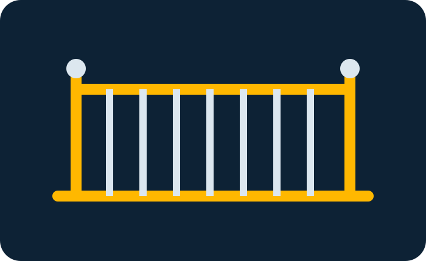
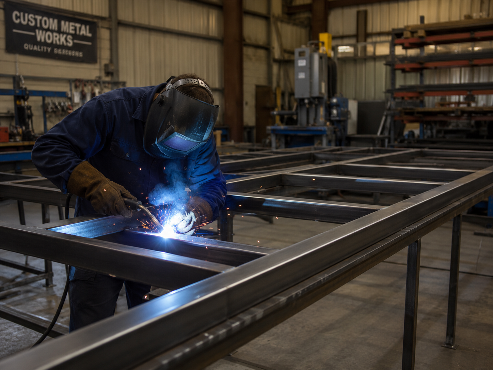
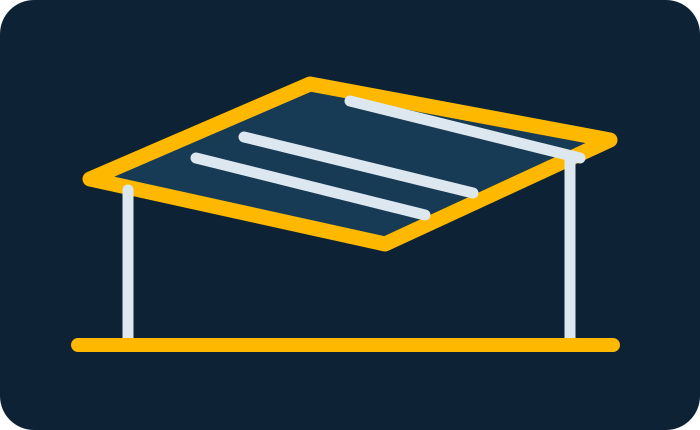
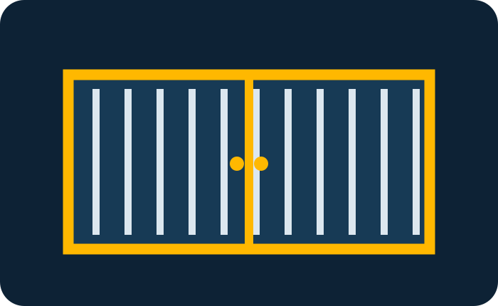
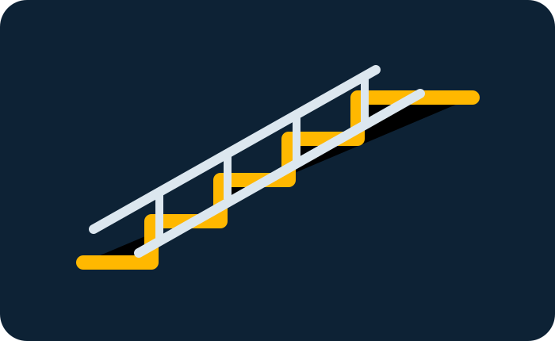
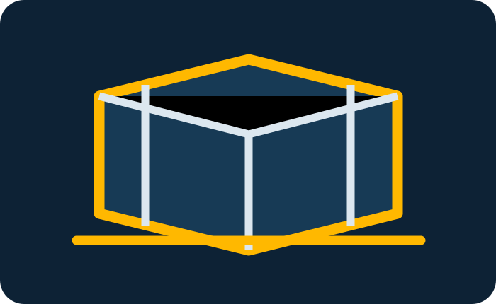
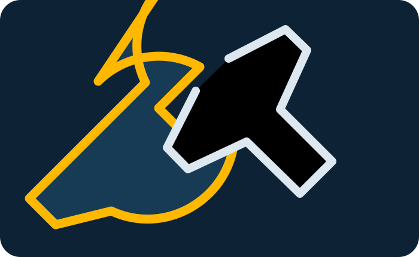
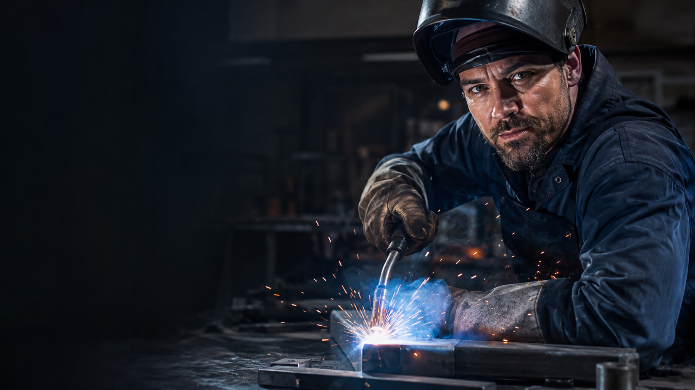

01 • RAILING
Railing Tangga & Balkon
Railing besi atau stainless untuk tangga, balkon dan teras dengan desain modern, minimalis maupun custom.
Konsultasikan →Jasa welding profesional untuk railing, kanopi, pagar, tangga besi, fabrikasi custom dan perbaikan. Dari survey hingga pemasangan, semuanya dikerjakan dengan detail.

Nusa Weldworks adalah nama sementara untuk preview. Konsep website ini dibuat untuk usaha welding yang ingin terlihat profesional, terpercaya dan mudah dihubungi calon pelanggan.
Semua visual layanan tersimpan lokal di folder assets, jadi tidak tergantung link foto eksternal dan tidak akan hilang saat website dipindahkan.

Railing besi atau stainless untuk tangga, balkon dan teras dengan desain modern, minimalis maupun custom.
Konsultasikan →
Kanopi rumah, carport, teras dan area komersial dengan rangka yang kuat serta tampilan bersih.
Konsultasikan →
Pagar sliding, swing gate, teralis jendela dan pintu besi yang bisa disesuaikan dengan fasad bangunan.
Konsultasikan →
Tangga besi indoor atau outdoor, termasuk struktur utama, anak tangga dan railing pengaman.
Konsultasikan →
Rangka, meja kerja, rak, dudukan mesin dan konstruksi metal custom berdasarkan gambar atau kebutuhan Anda.
Konsultasikan →
Perbaikan sambungan, penguatan struktur dan modifikasi berbagai produk berbahan logam.
Konsultasikan →
Kami menyesuaikan metode kerja dengan fungsi produk, jenis material, kondisi lokasi dan tampilan akhir yang diinginkan.
Kirim kebutuhan, ukuran perkiraan, foto lokasi atau desain referensi.
Kami cek kondisi lokasi dan memastikan ukuran sebelum produksi.
Pengerjaan mengikuti spesifikasi material dan desain yang disepakati.
Pemasangan di lokasi dan pengecekan akhir sebelum serah terima.
Website ini menonjolkan alasan calon pelanggan memilih jasa Anda, bukan hanya menampilkan daftar layanan.
Spesifikasi pekerjaan dan ruang lingkup dapat dijelaskan sejak awal.
Punya gambar referensi? Model dan ukuran bisa disesuaikan.
CTA WhatsApp ditempatkan di area penting agar pelanggan mudah menghubungi.
Galeri dan testimoni mudah diganti dengan data bisnis sebenarnya.
Untuk versi final, bagian ini idealnya memakai foto proyek asli agar kepercayaan calon pelanggan semakin tinggi.

01 • Welding & Fabrication03 • Precision Welding“Pengerjaan railing rapi, ukurannya pas dan komunikasi dari awal sampai pemasangan sangat jelas.”
“Kanopi terlihat modern dan konstruksinya terasa solid. Proses survey sampai instalasi juga cepat.”
“Kami butuh beberapa pekerjaan custom dan hasil fabrikasinya sesuai gambar. Recommended untuk project.”
FAQ membantu calon pelanggan mendapatkan jawaban tanpa harus menunggu balasan chat.
Kirim kebutuhan Anda. Form preview ini akan membuat pesan WhatsApp otomatis berdasarkan data yang diisi.